This
page on GitHub
LazyPredator
LazyPredator is a library for evolutionary
computation, a type of population-based optimization algorithm. It
uses genetic
programming where the individuals of the population are computer
programs in a “domain specific language”. The relative “fitness” or
“quality” of these programs is measured in small “tournaments” where the
programs compete against each other. Using a negative
selection approach, the lower fitness individuals of a tournament
are removed from the population, and replaced by a new “offspring” of the
tournament's higher fitness individuals. (The offspring is created from
parents by “cross-over” and “mutation” as described here.)
Negative selection implies that lower fitness individuals tend to die
off—while others tend to survive regardless of rank in the population.
Selection of participants in a tournament is “uniform” not “fitness
proportional.” This is the opposite of “elitism” and related practices in
evolutionary computation where the focus is on identifying and promoting
high fitness individuals. LazyPredator seeks to encourage “genetic
drift”—while continuing to prune the low performing individuals—in order
to gradually improve population fitness.
The name “LazyPredator” refers to this type of negative selection in
nature. A lioness may be capable of running down a healthy adult antelope.
But given the opportunity, she would rather find easier prey (the young,
or old, or injured) so she can obtain food for her family using less of
her own energy. Through this action, most of the antelope herd will be
fit, strong, and fast enough to survive. At the risk of mixing metaphors,
or at least species, there is a very old joke about this:
Two campers see a bear running toward them.
One starts putting on running shoes.
The other says, “What are you doing?! You can’t outrun a bear!”
The first says, “I don’t have to outrun the bear—I just have to outrun
you!”
LazyPredator is a sibling of TexSyn
a library for procedural texture synthesis. Together they support
experiments in adversarial evolutionary texture synthesis. I am especially
interested in simulating the evolution of camouflage in nature, as in this
earlier work: Interactive
Evolution of Camouflage.
The code repository for LazyPredator is at GitHub.
(I'm wondering about the writing style of this notebook. The one for TexSyn was largely
intended to show texture images along with commentary. When possible, I
tried to avoid coding detail. LazyPredator is about plain old software
design, so probably there will be more discussion here of lower level
details of the implementation. On the other hand, I do want it to be more
prose-like than the terse git commit messages.)
March 25,
2021
Weighting selection of functions for initial random trees
When creating the initial Population of Individuals,
the FunctionSet is filtered to a collection of GpFunctions
with the required return type, and which can terminate GpTree
construction (get to terminals) given the remaining tree “size.”
Previously: one element of the filtered collection was chosen by uniform
random selection. Now that happens by default, but the c++ initializer
for GpFunction can include an optional extra fifth
argument, a float, indicating a selection weight other than
one. Here for example is the “toy” example used in a new unit test. Each
of the four listed GpFunctions is half as likely to be
selected as the next one:
// Define FunctionSet with random selection weightings.
FunctionSet fs = { { { "Int", 0, 9 } },
{ { "L", "Int", {"Int"}, ..., 0.5 },
{ "M", "Int", {"Int"}, ..., 1 },
{ "N", "Int", {"Int"}, ..., 2 },
{ "O", "Int", {"Int"}, ..., 4 }, }, };
Adds new FunctionSet::weightedRandomSelect(), GpFunction::selectionWeight(),
and UnitTests::gp_function_weighted_select().
January
29, 2021
Back and forth on random tournament member uniqueness
Back on October 14 I wrote a Population::selectThreeIndices()
to pick indices of three random Individuals to form a
random tournament. Its purpose was to guarantee the three Individuals
were unique. This was to prevent forming a competitive tournament
between, say, individuals 57, 83, and 57. I am paranoid about “try until
success” algorithms getting stuck in infinite loop. But then I was also
hinky about the statistical properties of my non-iterative solution.
Eventually I decided that when selecting three items out of a collection
of about 100, the frequency of duplication seemed low enough to ignore,
so I just got rid of selectThreeIndices(). (To be sure,
there are non-iterative, statistically neutral solutions to this, they
just seemed a bit too heavy-weight to me. My intuition is famously
unreliable.)
Later “subpopulations” (SubPops, breeding demes) were
introduced. Now three Individuals were being selected from
of group of 20-25. When I started running interactive Camouflage tests,
it was visually obvious that a fair number of tournaments contained
duplicated Individuals. So today I brought back a
different implementation of selecting three unique indices called Population::threeUniqueRandomIndices().
This uses the evil “try until success” approach, but is liberally
sprinkled with calls to assert() meant to catch any
misbehavior, including getting stuck in the loop.
January
17, 2021
Upper and lower bounds on tree size during crossover
As suggested on January 12 LazyPredator now
supports both anti-bloat and “pro-bloat” — that is,
both upper and lower bounds on the size of trees created during
crossover. In the “tree size agnostic case” GP crossover leads to slow
but steady growth in population-average tree size. (That is: the GpTree::size()
of each Individual, averaged over the Population,
grows over time.) Recently I added a size-reducing bias to crossover
when the parent trees are too large. Now the corresponding
size-increasing bias is implemented when parent trees are too small.
These limits can be set to infinity and zero to deactivate the size
biases, but currently default to 150% and 50% of the
given parameter for initial random tree max size. So for an initial max
random tree size of 100, the size of trees during the run would be on
the range [50, 150]. The limit values can be read or written which
these member functions on a Population instance:
Population::getMinCrossoverTreeSize()
Population::setMinCrossoverTreeSize()
Population::getMaxCrossoverTreeSize()
Population::setMaxCrossoverTreeSize()
// Update February 3, 2021:
// New Population constructor allows these values to be specified initially:
Population(int individual_count,
int subpopulation_count,
int max_init_tree_size,
int min_crossover_tree_size,
int max_crossover_tree_size,
const FunctionSet& fs)
Here are eight LimitHue runs, four (red) with no limits, and four
(blue) with limits set to enforce tight bounds on tree size. The only
thing to see here is that reds and blues are roughly the same:
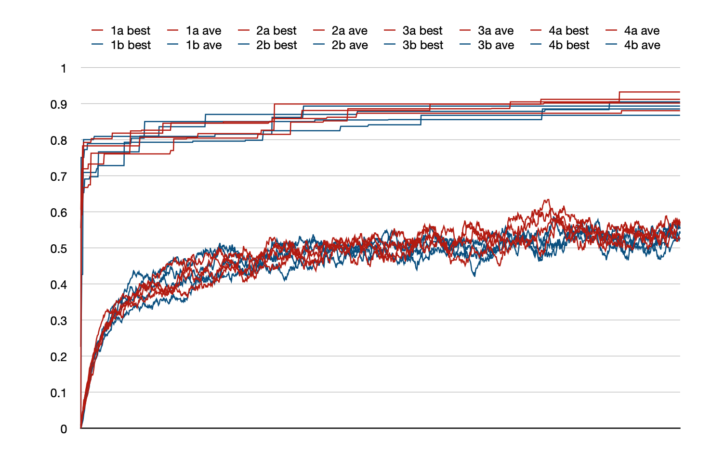
While the fitnesses are about the same in these two conditions, the
no-limits condition (green) show steady growth in tree size, with limits
(orange) stay within a narrow range:
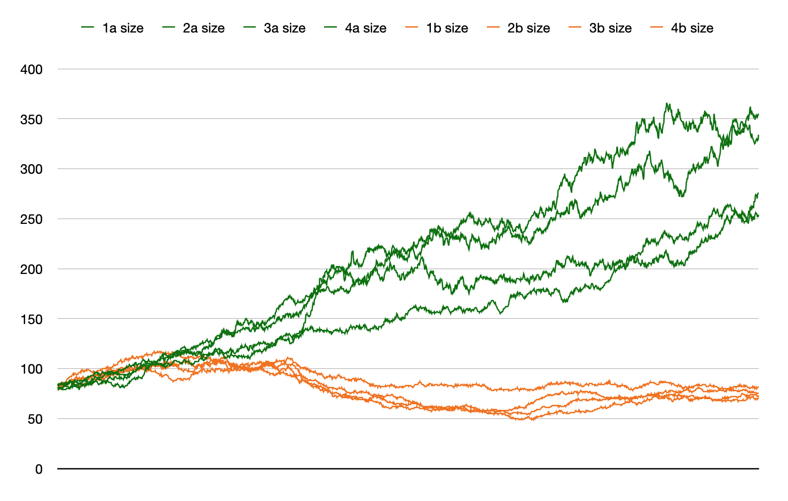
Here we zoom in on the bounded case (orange) to better see the vertical
scale. Not only are the allowed tree size values in a narrow range, I
also shifted this range twice during the run. For the first ⅓ of the
run, the size bounds are [100, 110]. So if the parent tree is smaller
than 100 (nodes) or bigger than 110, then size bias kicks in. For the
second ⅓ of the run, the size bounds are [40, 50]. For the final ⅓ of
the run, the size bounds are [70, 80].
The result is less crisp than I imagined. When (say) the upper bound is
crossed, the “offspring” is made to be smaller, but can be much
smaller. Perhaps with the upper and lower bounds set so close (10 nodes)
the bias was being used almost each crossover, in opposite directions.
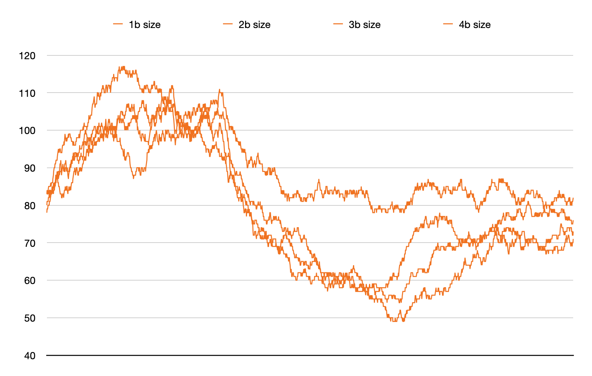
January
12, 2021
Size limitation during crossover: anti-bloat
As discussed on December 24, in some genetic
programming runs we see unbounded growth of program tree sizes. This
does not prevent the evolutionary optimization from running, but is
inconvenient because of slower execution, potentially larger memory
load, and the possibly of reducing the power of crossover the make
useful changes. (Since finding the “right” place for crossover is harder
in a large program).
This LimitHue::comparison() run was made with a prototype
change to the crossover code. Previously a parameter to the construction
of a Population has been “maximum tree size” for the
initial random GpTrees. The new approach is to have a
corresponding parameter for the “maximum desired tree size” for
crossover during the run. If the “recipient parent” in a crossover
operation has a size greater than this threshold, the crossover
operation will choose the recipient subtree to be smaller than the donor
subtree. As a result, the new offspring GpTree will be
smaller (or in certain edge cases, the same size) than the recipient
parent. As a result, the Population is generally
constrained to be composed of GpTrees that (generally) are
smaller than the original “maximum desired tree size” parameter.
In the current prototype implementation, this crossover limit is 1.5
times the initial limit on random tree sizes. I will probably provide
API to set it directly. It also would make sense to provide API for the
corresponding minimum size limit for crossover. This
would mean that if the “recipient parent” were too small, the crossover
subtrees would be chosen to increase the size of the offspring. I am not
sure if this is ever useful, but it seems like adding it now is better
than waiting to see.
While I do not want to read too much into an experiment with n=8
but it appears in this run that the four run with the
crossover size limitation (blue) have “best” and “average” fitness
slightly higher than the control case without the
limit (red):
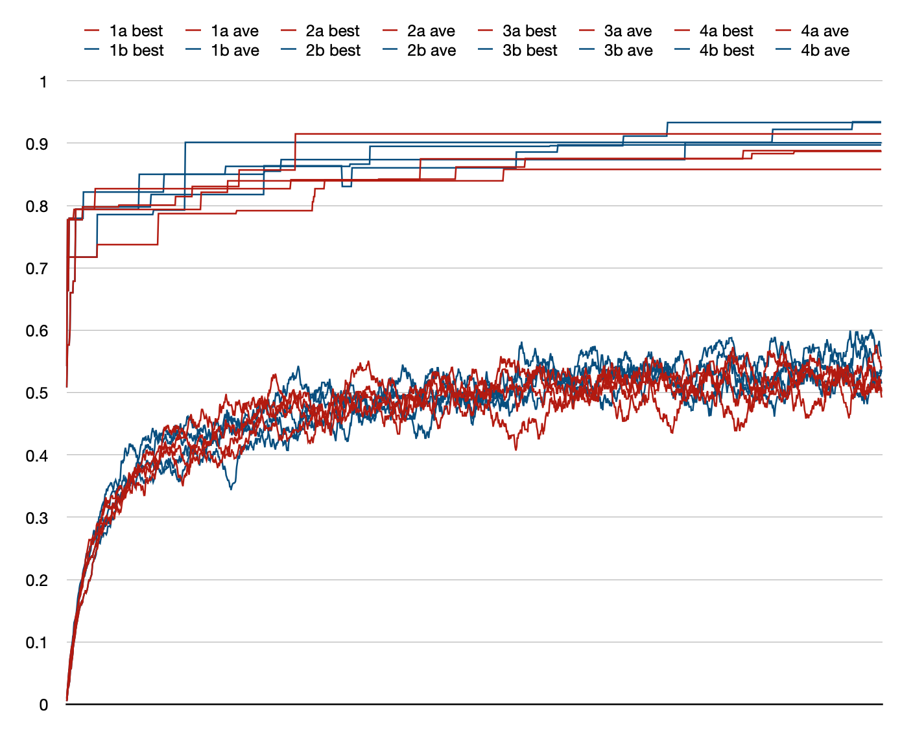
In this plot of GpTree program size averaged over all in
a Population, we see a clear difference between the four
runs with the crossover size limit (orange) and the
control runs without the crossover size limit (green).
With the limit, all four runs maintain average sizes below the limit of
150 while the four runs without the limit reach size averages above 150
with one reaching about 280:
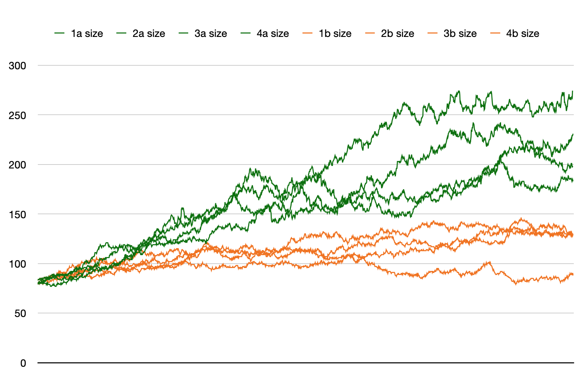
January
5, 2021
Another day, another tweak, another ambiguous plot
I changed the choice of which subpopulation is selected on each update
step. It had been a random selection, now it simply rotates through them
in order. Probably no difference for large runs, but in short test of
100 steps, I saw one (of four) get about 30% of the updates. I also
tested the migration policy and added some other unit tests. This test
is not obviously different from the previous one, although one of the 4
subpopulation runs got up to 95% which I think is the highest value I
have seen. On the other hand, runs with 4 subpopulations ended at 87.6%.
Like the comparison run on January 3, it is
hard to see any difference in performance between using 1 (red) or 4
(blue) subpopulations.
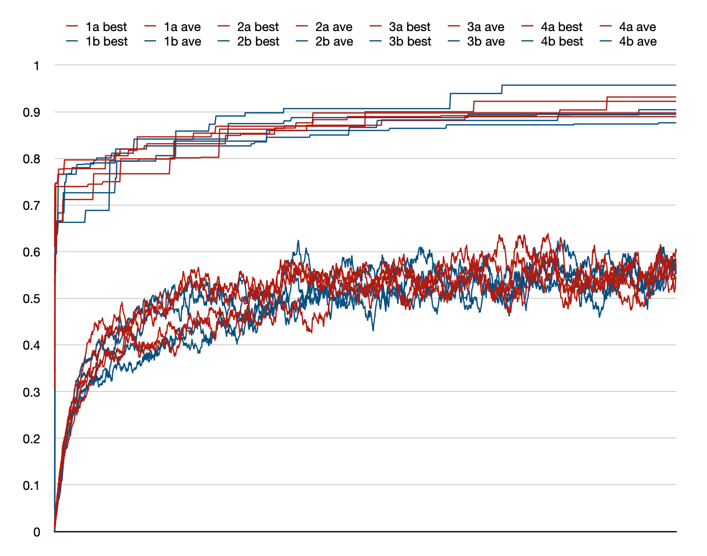
January
3, 2021
GP with subpopulations — “demes”
For a while now subpopulations had been on my to-do list of
features. This is the idea that instead of a population with, say, 100
individuals, we divide them into four subpopulations of 25 individuals
each. The evolutionary computation proceeds pretty much the same as
before, except that each Population::evolutionStep()
starts by selecting one of the subpopulations at random. Then as before,
it selects three individuals from that subpopulation, ranks them by
tournament, the two top ranked individuals produce an offspring, which
replaces the lowest ranked individual in the subpopulation. In addition,
individuals occasionally migrate between subpopulations.
The notion is that running multiple populations in parallel allows each
of them to climb a different hill in fitness space, allowing the
population spread out its investment. Some of those hills might be
higher than others, so multiple populations allows exploring more
territory. Subpopulations are sometimes called “demes” (“from the Greek”
as James Rice, my early GP mentor, told me when I asked about the term)
as used in biology “ a subdivision of a population consisting of closely
related plants, animals, or people, typically breeding mainly within the
group.” Similarly a single population GP, as LazyPredator had been
before now, is sometimes called “panmixia” from biology meaning “random
mating within a breeding population.”
I refactored Population to support subpopulation and took
it out for a test drive. I used the same LimitHue::comparison()
framework as before, making four pairs of runs, each run in a pair
starting from the same random seed, one run with a single population,
and one run with four subpopulations. Each run takes 2000 steps. I hoped
for a clear fitness advantage for the multiple subpopulation case. I did
not find it. This plot is an excellent illustration of the null
hypothesis. The plots in red have a single large population, those in
blue have four subpopulations ¼ as large. It would be hard to guess
which was which if they were not colored. Also puzzling is that the average
fitness for all eight populations are around 0.55 while in
previous runs they were near 0.75.
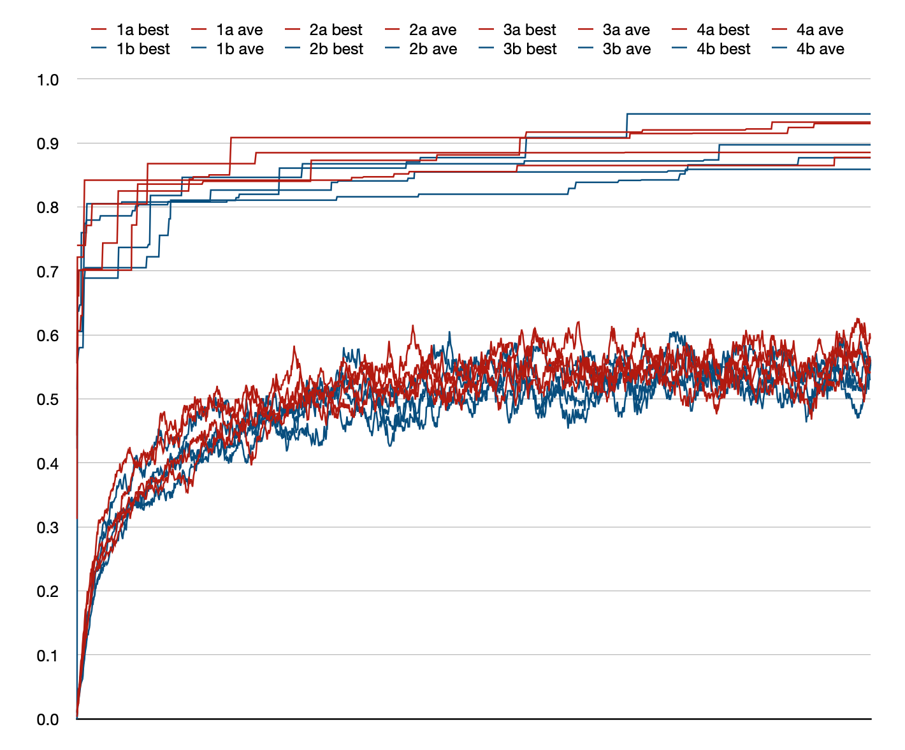
December
26, 2020
Oops, now computing initial “absolute fitness”
I had noticed, in TexSyn's prototype GUI, that right at the start of a
run, some of the “top ten” fitness textures listed fitness of zero,
which seemed incorrect. (That is, it “looked like” they ought to have
higher fitness.) I first assumed this was just a bug in the GUI, but
looking closer, it seemed to be a real bug. In the original
tournament-based relative fitness approach, a relative fitness ranking
is determined each evolution step (Population update) for
the three randomly chosen Individuals. This was not
happening for the later prototype absolute fitness.
The runs plotted below are like those on December
23 but an initial pass is made over the Population
computing initial fitness for all Individuals. It may be
just random variation between runs, but it looks like there is now
generally less variance between runs, and that the best of the best are
a bit higher. The overall best is 0.924 in run 3a.
I will fold this change into refactoring absolute fitness to
be a layer on top of tournament-based relative fitness.
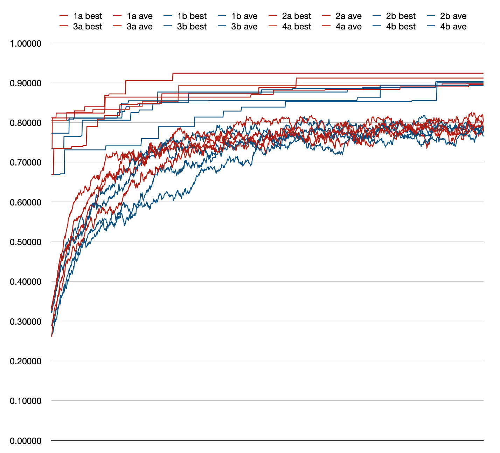
December
24, 2020 🎄
Tree size and bloat
Speaking of data from those LimitHue::comparison() runs,
I also recorded average-of-population tree size for each evolution step.
Recall each run was initialized with 100 individuals, each with a
maximum initial tree size of 100.
(Tree size is equivalent to the number of function names and constant
leaf values in the corresponding textual program notation. An
interesting tidbit is that all runs start with an average tree size very
close to 80. This ratio between average and maximum tree size (e.g.
80/100) probably depends on the FunctionSet being used.)
Most of the average-of-population sizes seem to end up between 200 and
400. While the first of these eight runs—the black trace in this
plot—wandered into the land of giant trees, peaking up near size 1100.
This occasional misbehavior of GP systems is called bloat.
Tree size does not directly correlate with execution time, via GpTree::eval(),
since some GpFunctions may run slower than others. But it
is a safe bet that, in general, a big tree will be slower than a small
tree. Larger programs certainly take up more memory, but in my
applications that is not a issue. There is also a theory, a GP “folk
belief”, that large trees can dilute the effectiveness of crossover.
I have a design sketched out that I hope will allow controlling tree
size to avoid bloat in what I think is a fairly natural way that will
not interfere with fitness measurement.
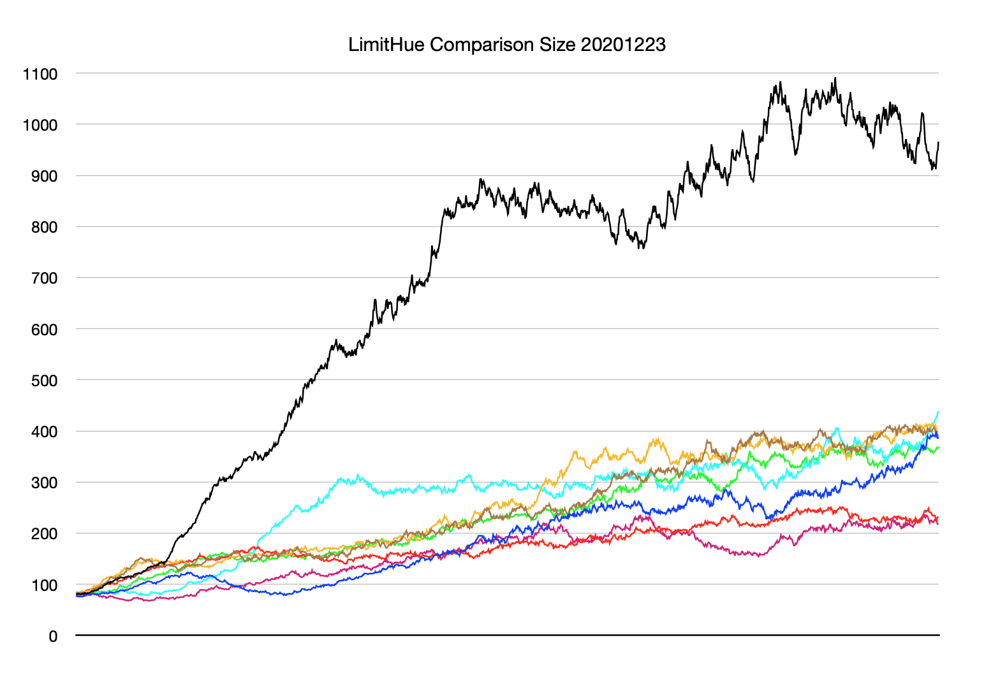
December
23, 2020
Redefine “absolute fitness” on top of relative tournaments
As discussed in the TexSyn blog on November
18, I went off on a side quest related to “absolute” fitness. This
is the more common way of thinking about evolutionary computation, where
an individual is tested or rated according to a fitness function,
resulting in a numeric value. The goal of the optimization is then to
maximize this fitness (or minimize, if you consider it an error
or loss metric). LazyPredator is meant to deal primarily with
“relative” fitness, as determined by competitive tournaments. (Recall
the analogy: while speculative ratings can be assigned a priori
to (say) athletes, it is not until they compete in a tournament that a
winner is actually determined.)
However, based on what seemed like lackluster optimization based on
tournaments, as a basis of comparison, I set off to re-implement the
traditional evolutionary optimization, as I had done in earlier work. So
instead of using tournament-based contests, I added a parallel facility
for absolute numeric fitness, judging Individuals in
isolation. The tournament-based evolution step looked like:
- Randomly select (with uniform distribution) three
Individuals
from the Population.
- Place them in a competitive tournament to produce a fitness ranking.
- The first and second place finishers are selected as “parents.”
- Use crossover and mutation to produce a new
“offspring” from the parents.
- The third place finisher is removed from the population (“dies”) and
replaced with the offspring.
The more traditional “absolute fitness” based evolution step was:
- Randomly select two parents from the population biased
toward high fitness.
- This was done by making a uniform selection of three individuals
then choosing the one with highest fitness.
- Randomly select one individual from the population, biased toward
low fitness, to be replaced by the new offspring.
- This was done by making a uniform selection of three individuals
then choosing the one with lowest fitness.
- Use crossover and mutation to produce a new
“offspring” from the parents.
- Replace the low fitness individual with the new offspring.
Note that absolute fitness for a given individual does not change, so
is computed one per individual then cached. This is generally not the
case for competitive fitness.
I got to thinking about the selection procedure. In the absolute case,
nine individuals are selected then used as bias to winnow down to the
three actually used in the update step. I wondered if this level of
“elitism” was good or bad. Parents would always be selected from the top
ranked individuals in the population, because the best-of-three
selection is strongly biased toward them. Conversely, all the “deaths”
would be among the the very low ranked individuals. This sort of elitism
may cause the evolutionary optimization to be “greedy” — to concentrate
on low hanging fruit — and perhaps be short-sighted.
So I considered a different selection procedure: uniformly select
three, rank those as in the competitive tournament case, the top two are
the parents, and the “loser” is replaced by the new offspring. That is,
the absolute fitness case is implemented as a
simplistic tournament where rankings are just sorting by fitness. Unlike
the nine-way selection, it is possible that all three participants (two
parents, and loser) could be from the very bottom, or the very top, of
the rankings. I set up a comparison framework to run four rounds of both
conditions (both beginning from the same random seed). Each Population
consisted of 100 Individuals, each with a maximum initial size of 100.
Each optimization was for for 2000 steps (which is 20 “generation
equivalents”). The entire comparison of eight runs took abut 5.5 hours.
For each run, I recorded the fitness as best-of-population and
average-of-population, for each of the 2000 steps. These are shown in
the plot below. There are 16 lines, best and average for each of eight
runs. They are color coded by condition: (a) the nine-way selection with
stronger bias are in the magenta-to-red range, (b) the three-way
selection with less bias are in the green-to-cyan range. The “best” at
the top are monotone increasing steps, the “ave” plots are lower and
noisy.
After all that, what I see in the plot is no obvious
difference in performance between the a/red runs and the
b/green runs. The best-of-population fitnesses end up around 0.85 to
0.90, with the averages around 0.75. The averages of the b/green
runs are closer together, possibly indicating less variance, but that is
just a supposition.
I will take all this as evidence that LazyPredator's support for
“absolute fitness” should be refactored to be based on top of
tournament-style evolution steps.
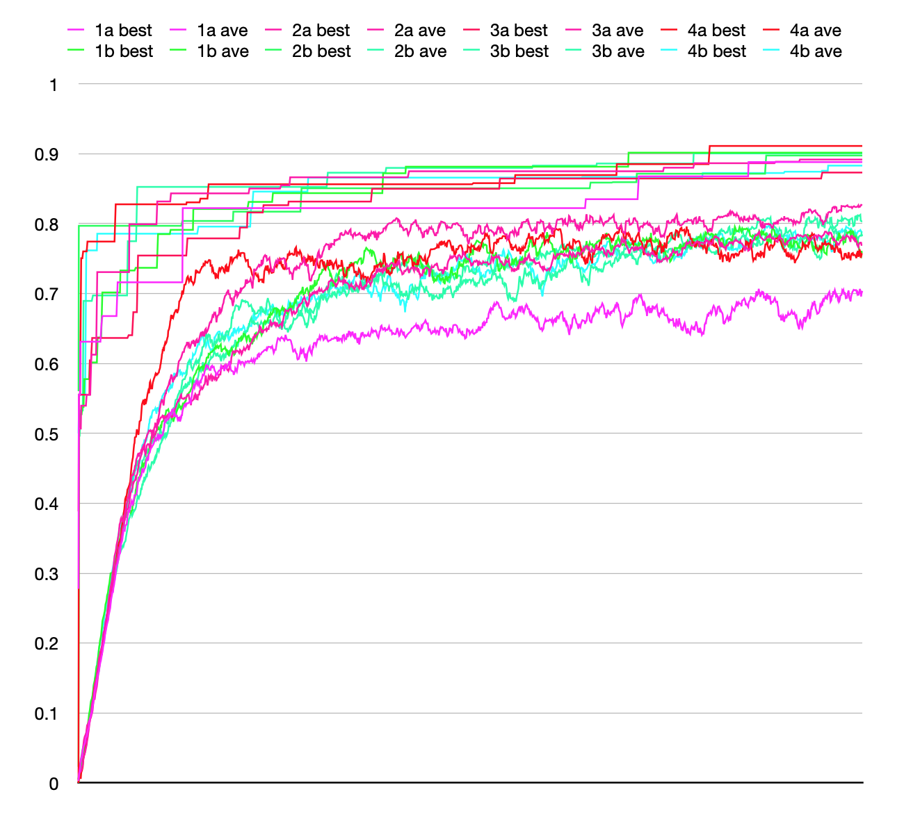
November
27, 2020 🍗
GpTree with “phantom limb”
Toward the end of November I was tracking down a memory leak. As
described here,
the leak was actually in OpenCV. It took me a while to track that down
because of an unrelated “confounding bug” in TexSyn's FunctionSet
defined in GP.h. The actual code, a GpFunction
initializer, is shown here, with the bug in red:
...
{
"CotsMap",
"Texture",
{"Vec2", "Vec2", "Vec2", "Vec2", "Texture", "Texture"},
evalTexture(CotsMap(argVec2(),
argVec2(),
argVec2(),
argVec2(),
argTexture()))
}
...
The problem is that the third line has a typo, an extra GpType
specification for a Texture. It is saying that the GpFunction
for CotsMap has six parameters: four of GpType
Vec2 and two of Texture. In
fact, as seen in the next line, CotsMap actually has five
parameters, four Vec2 and one Texture.
The result of this specification mismatch is that any occurrence of CotsMap
in a GpTree would generate six subtrees.
One of them would be ignored, specifically by GpTree::eval(),
leading to uninitialized values, which caused an error in the
destructor. This mismatch caused no end of confusion, especially
appearing as it did during my hunt for the memory leak.
To avoid this confusion in the future I need a way to validate that
these two different ways of specifying the parameters to a GpFunction
match. One side has to do with actual C++ code definitions and one has
to do with the abstractions used by FunctionSet. The lack
of “introspection” in C++ makes this difficult. For example it would be
straightforward in Lisp.
October
31, 2020 🎃
Progress report: TournamentGroup and bug fix
I have been working along, making incremental progress. After the
“yellow/green” test described on October 19 I
started on a slightly more ambitious test case I called “colorful, well
exposed” textures (in a package named CWE). It is nearly
random evolution, constrained only by tournament-based “fitness” tests
that favor textures with a full range of brightness (luminance) and
color saturations. It measures these by uniformly sampling colors from
the texture, placing them into a histogram (of saturation or brightness)
then scoring the histogram's flatness (uniformity).
Previously, a lot of my prototype tournament functions had the
structure of passing in three Individual* pointers and
returning the “worst” one, the loser of the tournament. This felt
awkward and led to duplicated code (e.g. for finding best or worst
individuals). So I refactored things to put most of that into a new
class TournamentGroup. It encapsulates the previously
duplicated code and serves as a container for the individuals in a
tournament, with the side benefit of allowing them to have arbitrary
size. (In case there is ever a need for tournaments with 2 or 10
participants.) Always the careful incrementalist, I made an #ifdef
flag so converting to using the new class was reversible. I got the CWE
test running with TournamentGroup then went back to verify
I got the same result from the old and new code. I did not.
While poking around I realized that the old code had a significant bug
in Population::evolutionStep(). It was related to that
“duplicated code” issue, and was definitely doing the wrong thing in ⅓
of the cases.
After various testing, I went back to the YG
(“yellow/green”) test and reran it, using the new TournamentGroup-based
bug-free code and got much more satisfying results. The October
19 results seemed disappointingly “indecisive.” I had expected the
green level to push right up toward 100% and the blue level to drop down
near zero. Instead the results less convincing—green was highest, red in
the middle, and blue lowest—but they wandered in the mid-range instead
of pushing out to the bounds. I plotted the results of the new run and
it looked much better. Not only are the “population best” green/blue
values very close to the bounds, but the “population average” are within
about 5% of the bounds. Also this run is 1000 evolution steps long. The
run on October 19 was five times longer and never got this close to its
goal.
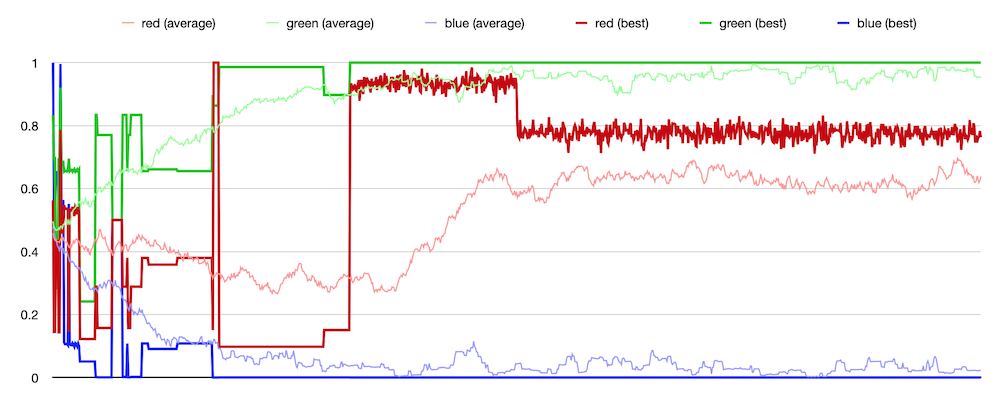
October
19, 2020
Evolution: first quantitative data
I did some more tooling work, and collected some data on the simple
test application I described on October 17. As
then, there are 3-way tournaments. Three TexSyn textures compete based
on their “average color.” That is, as if they were infinitely blurred,
and could be represented by a single color in RGB space. The tournaments
have two cases, one of which is selected randomly. The three textures
compete for either (a) the highest green component of their three
average colors, or (b) the lowest blue component. This should drive the
population toward colors with high green, low blue, and unconstrained
red. This describes colors in the yellow-to-green region.
The run plotted below has a population size of 50, and was run for 5000
steps (which corresponds to 100 “generation equivalents”). This took
about 20 minutes, or longer if I rendered the textures. Originally I
displayed them one after another, as sort of a flickering movie, which
allowed me to see they were trending toward yellow/green color schemes.
I recorded ad hoc data and made some plots. I looked at the
“average average” color—taking the average color of all 50 textures in
the population and averaging them together each step. That produces the
wiggly lines in the plot below identified in the legend as “red
(average)” etc. This looked OK, the green was higher, blue lower, and
red seemed to drift someone in between. Then I selected one member of
the population as “best.” This is subject to change. My current criteria
for “best” is the member of the population which has “survived” the most
tournaments. Since losing a tournament (being ranked third of three)
leads to an individual being removed from the population, it seems that
the number of times one has been tested and survived is some proxy of
quality. The three step-like plots show this current “best” individual's
average red, green and blue. The step changes are when a new best comes
along, then holds steady until the next change of rankings. Unlike the
“average average” plots, these “best” values are closer to the extremes,
near or at the bounds of unit RGB space. (TexSyn does not place bounds
on color values, but I used Color::clipToUnitRGB() when
computing average colors for this run.)
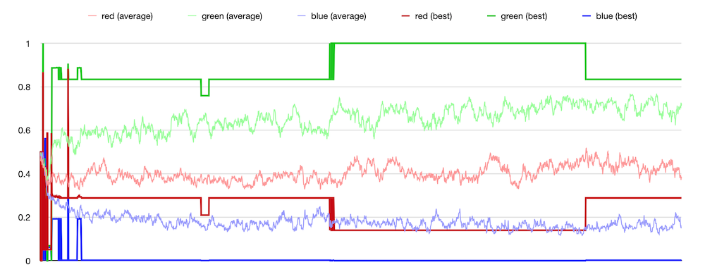
One unrelated problem that arose during this work had to do with
“minimum size for crossover snippet” as discussed on October
8. On a whim I had chosen a value of five, while
the smallest valid TexSyn tree has size four, as in: Uniform(0.3,
0.8, 0.4). My thought was I would rather see slightly larger
subtrees used for crossover. It seemed to work fine until today when I
was initializing a larger population of size 50. One of those initial
random trees just happened to be that minimal size four example.That led
to an obscure divide by zero error. I made a temp fix but it needs some
more thought.
October
18, 2020
Fixing that mutation problem, setting jiggle scale.
I re-enabled GpTree::mutate() and tracked down the
problem seen earlier. The added-in-a-hurry GpType::getMaxJiggleFactor()
function was misbehaving (the wrong this pointer was
captured in the jiggle handler lambda). The intent was to allow
customizing the “jiggle scale” but as I had noted in the code, it was
not obvious how or when that could happen. I suspect it does not really
matter. The default value (of up to ±5% of the given numeric range of a
GpType) would probably be fine. But if some imaginary
future user of LazyPredator did need to tweak that value they
would be annoyed it was not settable.
So instead, the mutation bug is now fixed, and the “jiggle scale” still
defaults to 0.05 via a new static function called GpType::defaultJiggleScale(),
but can be overridden by yet another constructor for the class. For
example one of the TexSyn GpTypes is currently written:
...
{ "Float_01", 0.0f, 1.0f },
...
with its “jiggle scale” defaulting to ±5%, or a custom value
can be given like this:
...
{ "Float_01", 0.0f, 1.0f, 0.2f },
...
indicating the jiggle scale for that type is ±20% of the given range
[0, 1]. Shown below is a plot of repeated jiggle mutations of values
from two such GpType definitions. The blue trace
corresponds to the default jiggle scale of 0.05 and the red trace with a
scale of 0.2. The red trace can change by four times the amount of the
blue trace—per mutation—so moves four times faster. There are 500 steps
across the horizontal axis.
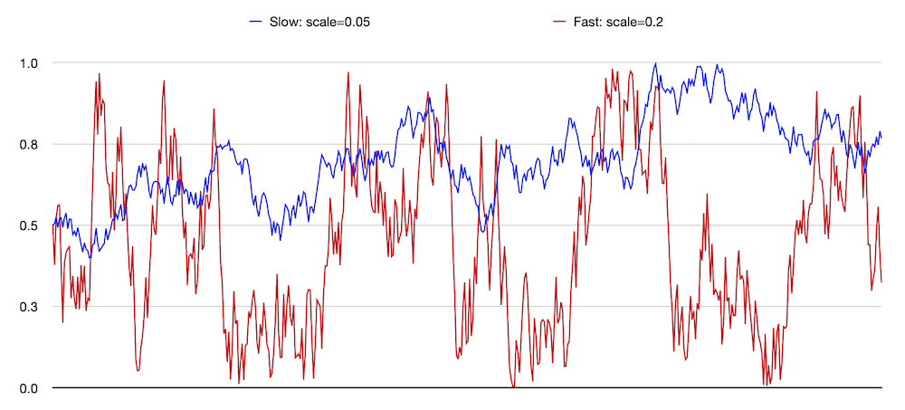
October
17, 2020
Evolution, almost certainly!
Huzzah! On October 15 I
cobbled together a minimal evolution run, using the TexSyn API. I ran a
small number of “steps” — steady state population updates — and it did
not crash. The next day I cleaned up the prototype tournament function
so it might actually be correct. Then I tried a longer run. I got to
step 61 when it failed an assert (in TexSyn's RGB↔︎HSV conversions).
That code has been stable for many months, as I dug in it seemed to just
be noticing bad input data (floating point nans). Then
followed a lot of unsuccessful attempts to isolate the failure. Finally
I recalled that I had slapped together GpTree::mutate()
just before trying an evolution run. Indeed, when I commented out the
call to that, the assert failures stopped. To be fixed soon.
Even better, when I let my tiny Population of 10 Individuals
run for 1000 steps — what my non-steady-state peeps would call “100
generations” — the Population seemed to be clearly
evolving toward the goal state. As mentioned in the previous post, I was
looking only the “average color” of the TexSyn Texture
which is the value of the evolving Individuals. In fact, I
looked only at the green and blue components of the average color (in
RGB space) so all details of textures are ignored. The “winners” of a
tournament among three Textures are the two whose average
color have either: the higher green level, or the lower blue level.
(Conversely: the “loser” of the tournament is the color with the lowest
green or highest blue.) This is a simplistic example of a 3-way
tournament and multi-objective optimization. Participants in the
tournament are chosen at random, uniformly across the Population.
The tournament then makes a uniform random choice between minimizing
blue or maximizing green. As the 1000 step evolution ran, the
tournament-winning texture clearly moved into the green-to-yellow color
range. (The red RGB component is ignored, so allows drift across the
green-yellow range.)
There is lots more to do, but at least LazyPredator has passed into
“not obviously broken” territory. I noticed that the modest 1000 step
run accumulated 1.8 GB of memory which means it's leaking memory like
mad. OpenCV Mat objects are a likely candidate.
October
15, 2020
Evolution, maybe?
I think I got all the pieces glued together sufficiently so this
afternoon I was able to “turn the crank” on an evolutionary computation,
if only briefly. It is at least running. Not sure if it is actually
working. The first version was using random tournaments, so it was
impossible to tell. Then I tried to make a simplistic tournament
function. Using the TexSyn FunctionSet, I told it to
prefer textures whose average color had high levels of green or low
levels of blue. This should produce textures which are primarily in the
green-to-yellow neighborhood of color space. Again, it ran OK, but no
obvious evolutionary change in such a short test.
October
14, 2020
Back to Population and Individual
After about two months developing a representation for genetic
programming (FunctionSet, GpTree, GpFunction,
and GpType) I have returned to the basics of evolutionary
computation: Individual and Population. My
initial plan is to avoid the traditional numeric measure of fitness,
instead using relative fitness as measured in competitive tournaments.
For some definitions of fitness, there is no significant difference. If
we define the fitness of a tower as its height, then that one number
tells us all we need to know about an individual. But in other kinds of
fitness—for example, which team in a sports league is best—all that can
be established is a relative ranking. We cannot evaluate a team to
produce a single numeric fitness that predicts which of two teams will
win a match.
My initial plan is to use tournaments of three Individuals
from the Population. This provides a minimalist
replacement strategy for the “steady state genetic algorithm”: three
individuals are selected at random (neutral selection, not “fitness
proportionate”), they compete in a three-way contest, the Individual
which does the worst is removed from the Population, and
replaced with a new offspring, formed by crossover between the other two
Individuals in the tournament. It is not required to
establish a “full ordering” of the three Individuals, only
to determine which is in last place. The ranking of the other two is
ignored.
Yesterday I experimented with several implementations of Population::selectThreeIndices()
to select three random but unique (“without replacement”?) members of
the population to be in a tournament. (The “modern c++17
way” of doing this is with std::sample() but for the
moment I needed to use LP's RandomSequence API.) Today I
started building out the Individual and Population
classes. I am now able to initialize a Population of a given size, where
each Individual is initialized with random GpTree
of a given max size from a given FunctionSet.
October
11, 2020
“Jiggle” mutation for numeric leaf values.
Based on yesterday's streamlining for ranged
numeric types, it was pretty easy to add a new handler function to GpType
to provide “jiggle” mutation for the numeric constant values found at
leaves of GpTrees. Like yesterday, I only supported c++
concrete types int and float. If others are
needed they can be added later, or explicitly implemented using the
older, more general form of GpType constructor. The jiggle
handler function is automatically constructed for a ranged numeric
GpType, based on the given range bounds and a parameter
prototyped as GpType::getMaxJiggleFactor(). It is
currently set to 0.05 so at any given jiggle, a value will be offset by
up to ±5% of the given range. Here is a little test code to
watch iterated jiggle of an int and float
type on the range [0, 100]:
GpType ti("Int", 0, 100);
GpType tf("Float", 0.0f, 100.0f);
std::any vi = 50;
std::any vf = 50.0f;
for (int k = 0; k < 1000; k++)
{
vi = ti.jiggleConstant(vi);
vf = tf.jiggleConstant(vf);
std::cout << ti.to_string(vi) << ", ";
std::cout << tf.to_string(vf) << std::endl;
}
The result behaves as a “bounded Brownian” series. It stays within the
given range, covering the entire range, while not hugging the bounds due
to clipping. I took the log from that code and pasted it into a
speadsheet for plotting:
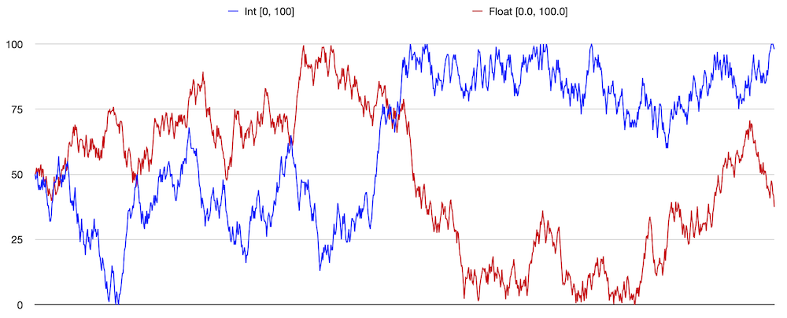
October
10, 2020
GpType constructors: less is more
Two key operators in genetic programming are crossover and mutation.
Crossover has been discussed before. I was
starting to think about a “point mutation” operator on GpTrees
that adds noise to numeric parameters in a tree's leaves. This is not
about that, but was prompted by setting the stage for it. The definition
of TexSyn's FunctionSet consists of two collection: GpTypes
and GpFunctions. (And now a third parameter for crossover_min_size.)
Before today, the GpType specs looked like this:
{
{ "Texture" },
{ "Vec2" },
{
"Float_01",
[](){ return std::any(LPRS().frandom01()); },
any_to_string<float>
},
{
"Float_02",
[](){ return std::any(LPRS().frandom2(0, 2)); },
any_to_string<float>
},
{
"Float_0_10",
[](){ return std::any(LPRS().frandom2(0, 10)); },
any_to_string<float>
},
{
"Float_m5p5",
[](){ return std::any(LPRS().frandom2(-5, 5)); },
any_to_string<float>
}
}
I have been glossing over this format for GpType
constructors, since it felt a little preliminary. Texture
and Vec2 are used only as tags to correctly matching up
inputs and outputs of GpFunctions. The other four types
are specializations of the concrete c++ type float.
These four types differ only in the range of values they represent. For
example, Float_01 are values on the interval [0.0, 1.0]
and Float_m5p5 are values on the interval [-5.0, 5.0]. For
each GpType “initializer list” (between braces {})
there is: (1) a character string name, (2) a function to return a random
“ephemeral constant” uniformly selected from the type's range, and (3) a
function that casts from a value of this type to a character string for
printing. (The values actually passed around are of type std::any
for “type erasure” but let's not get into that right now.)
I came up with a way to make this less messy. I hope eventually that
LazyPredator will be used for other applications. For now however, it is
only being used with the FunctionSet for TexSyn. So this
may be short-sighted, but so far, a GpType either just
tags an instance of a c++ class (like Texture and Vec2)
or it represents a numeric type, perhaps with range constraints (like Float_01
... Float_m5p5). So rather than writing out the two (soon
to be three) handler functions/lambdas, all we need to specify are the
ranges. I defined two new constructors for GpType one for
float and one for int that takes: a name, range_min, and range_max. The
internal structure of a GpType object is unchanged, this
is just a different way to initialize its internal state. The result is
a much more compact specification for the GpTypes of a FunctionSet:
{
{ "Texture" },
{ "Vec2" },
{ "Float_01", 0.0f, 1.0f },
{ "Float_02", 0.0f, 2.0f },
{ "Float_0_10", 0.0f, 10.0f },
{ "Float_m5p5", -5.0f, 5.0f }
}
I like this approach. The connection with mutation operators is that
soon there would have been need for a fourth item in GpType's
initializer list: a function to “jiggle” an existing value of this type.
Having defined a GpType as a ranged numeric value, we can
automatically generate the handlers for randomizing, printing, and soon,
for mutating. The older constructors remain available for cases not
covered by this streamlining.
October
8, 2020
Minimum size for crossover snippet
I am developing LazyPredator and TexSyn in parallel, so sometimes its
hard to decide which “blog” should get a post. Recent work with GP
crossover was been reported in TexSyn's posts on October
3 and October
5 (and previously on this page on September
30). The topic of the October
5 post, and this one, is the question of whether random “crossover
points” in a pair of parent GP trees should be selected uniformly across
all nodes in the trees. I think this is the most common and
“traditional” approach. But I decided to allow a variation on this which
seems useful in a concrete case like TexSyn's FunctionSet.
The GP tree crossover operation is based on selecting, in two “parent”
trees, a pair of nodes. Those two nodes are the roots of two subtrees,
which can be thought of as a snippet of code in normal linear textual
code notation. We copy the selected subtree of the “donor” tree, and
paste it over the subtree of the “recipient”/offspring tree.
But let's back up a bit, how is the random selection of a node in each
tree defined? In the October
3 examples this was done in what I consider the “traditional” way:
a recursive traversal of the tree is made and a reference to each
node/subtree is stored in an array (in this case an std::vector),
then a random index over the size of the array is generated and the
corresponding subtree is selected. (Equivalently without the array: one
traversal measures the size of the tree, the random index is determined,
then a second traversal is made until it reaches the node corresponding
to that index, which is returned.) This means that the selection of tree
nodes is uniformly distributed over all nodes in the tree.
Because LazyPredator is based on STGP (strongly typed genetic
programming) there is an additional constraint that the two selected
subtrees have the same type (GpType). This is accomplished
by first selecting a node in the “donor” tree, then filtering the nodes
of the “recipient” tree to consider only subtrees with a matching type.
Consider this (partially redacted) FunctionSet. It shares
a property with TexSyn that the root type (Thing) has no
“ephemeral constants”, while the other type (Int) has no
operators, appearing only as numeric constant leaf nodes:
FunctionSet fs =
{
{
{
"Thing", nullptr, any_to_string<...>
},
{
"Int", [](){ return std::any(int(LPRS().randomN(10))); }, any_to_string<int>
}
},
{
{
"This", "Thing", {"Thing", "Thing"}, [](const GpTree& t) { ... }
},
{
"That", "Thing", {"Thing", "Thing"}, ](const GpTree& t) { ... }
},
{
"Other", "Thing", {"Int", "Int"}, [](const GpTree& t) { ... }
}
}
};
This is a typical random GpTree, of size 55, created by
that FunctionSet with 28 numeric constant leaf nodes (in
red):
This(Other(9, 0),
That(This(This(This(Other(8, 2),
This(Other(5, 9),
Other(3, 8))),
Other(3, 1)),
That(This(This(Other(6, 1),
Other(8, 1)),
Other(4, 0)),
This(Other(3, 2),
That(This(Other(9, 4),
Other(6, 9)),
This(Other(6, 4),
Other(1, 9)))))),
Other(9, 6)))
Note that 28/55 or about 51% of random nodes (selected uniformly) will
be these numeric constants. So given two GpTrees from this
FunctionSet, roughly half of all crossover operations will
consist of moving a single numeric constant from one tree to the other.
(Recall that in STGP, Ints from one tree can only
crossover to Ints in the other tree.) About half the
crossover operations will do nothing but parameter “tweaking” and in a
way that ignores the context that would normally exist when a larger
subtree is moved. I would prefer that “tweaking” constant leaf values be
done by point mutation, which is defined to make “small” changes in
value.
Consider instead this version of that FunctionSet, identical but with
the new crossover_min_size parameter added at the bottom:
FunctionSet fs =
{
{
...
},
{
...
},
2
};
By increasing the crossover_min_size to 2
from its default of 1, this requires that all
crossover subtrees/snippets must be of size 2 or
larger. Specifically this means that a single numeric constant leaf
value (of size 1) is excluded from selection as the
crossover subtree/snippet. (As mentioned above, this is accomplished by
filtering the set of candidate subtrees, in this case by size.) The
effect of this is that all crossover snippets must consist of subtrees
larger than a single leaf node. In terms of the random program above:
all of the red leaf nodes are excluded, and the selection must be one of
the larger subtrees in black. In the examples shown in TexSyn's blog for
October 5, a
crossover_min_size of 5 is used, implying
that the crossover snippet must be larger than the minimal (size 4) Texture
generator of Uniform(r, g, b), a “texture” of uniform
color.
September
30, 2020
Crossover of GpTrees — wait, that was too easy
In biology chromosomal
crossover is a key mechanism where the DNA of two parents is
combined to produce a unique offspring. Two corresponding strands of
parental DNA are “scanned” in parallel, with one or the other being
copied into the new offspring's DNA. During this “scan” the source of
the offspring's DNA changes “randomly” from one parent to the other. (If
you are a biologist, please forgive this over-simplified probably
incorrect description.)
In genetic programming there is an analogous “crossover” operation on
program trees. When describing GP I often call this “random syntax-aware
copy-and-paste.” It is as if a subtree (subexpression) from one parent's
program is copied, then pasted into (a copy of) the
other parent's program, replacing a preexisting subtree (subexpression).
This creates a new offspring program with part of its code from one
parent and part of its code from the other parent. LazyPredator
implements “strongly typed genetic programming” so there is the
additional constraint that the type of the two subtrees must match. (In
TexSyn, most of the subtrees are of type Texture, but some
subtrees return Vec2 or numeric float
values.)
Crossover had been on the to-do list for a while and I finally got
around to working on it. I defined a new test FunctionSet
whose terminals are all single digit integers, and whose functions
belong to two families: P, PP, PPP, Q, QQ, and QQQ. Here is that FunctionSet's
self description:
1 GpTypes:
GpType: Int, min size to terminate: 1, has ephemeral generator, has to_string, functions returning this type: P, PP, PPP, Q, QQ, QQQ.
6 GpFunctions:
GpFunction: P, return_type: Int, parameters: (Int).
GpFunction: PP, return_type: Int, parameters: (Int, Int).
GpFunction: PPP, return_type: Int, parameters: (Int, Int, Int).
GpFunction: Q, return_type: Int, parameters: (Int).
GpFunction: QQ, return_type: Int, parameters: (Int, Int).
GpFunction: QQQ, return_type: Int, parameters: (Int, Int, Int).
I also added a mechanism to FunctionSet allowing a filter
to be specified on the available functions. Here are randomly created
program trees drawn from the two sets:
PPP(PPP(P(7), P(P(1)), PP(4, 3)), P(PPP(P(8), P(P(0)), PP(8, 4))), PPP(P(P(1)), P(P(6)), P(P(7))))
QQQ(Q(QQQ(Q(7), Q(2), QQ(5, 8))), Q(QQQ(Q(5), QQ(5, 3), Q(Q(3)))), QQQ(QQ(3, 4), QQ(6, 1), QQ(8, 1)))
Then I manually selected a subtree from each of those GpTrees:
PPP(P(7), P(P(1)), PP(4, 3))
QQQ(QQ(3, 4), QQ(6, 1), QQ(8, 1))
Then I assigned one to the other:
gp_tree_p.getSubtree(0) = gp_tree_q.getSubtree(2);
Et voila!:
PPP(QQQ(QQ(3, 4), QQ(6, 1), QQ(8, 1)), P(PPP(P(8), P(P(0)), PP(8, 4))), PPP(P(P(1)), P(P(6)), P(P(7))))
Writing that again with indentation and color to highlight the
subtrees:
PPP(PPP(P(7), P(P(1)), PP(4, 3)),
P(PPP(P(8), P(P(0)), PP(8, 4))),
PPP(P(P(1)), P(P(6)), P(P(7))))
QQQ(Q(QQQ(Q(7), Q(2), QQ(5, 8))),
Q(QQQ(Q(5), QQ(5, 3), Q(Q(3)))),
QQQ(QQ(3, 4), QQ(6, 1), QQ(8, 1)))
PPP(QQQ(QQ(3, 4), QQ(6, 1), QQ(8, 1)),
P(PPP(P(8), P(P(0)), PP(8, 4))),
PPP(P(P(1)), P(P(6)), P(P(7))))
September
21, 2020
Runtime connection between LazyPredator and TexSyn
[Update on September 29, 2020: after some further
revisions, I made a “first final” FunctionSet for TexSyn.
The code below is both incomplete and slightly outdated. To see the
“modern” FunctionSet for TexSyn in this source code: GP.h
(assuming I did that right, it should be a permalink to the revision of
GP.h as of September 29 on GitHub.)]
Finally LazyPredator and TexSyn are talking together at runtime! I had
mocked this up back on August
15 by having prototype FunctionSet:makeRandomTree()
print out the “source code” of generated trees, then hand editing that
into a test jig in TexSyn and rendering the textures. Now it is actually
working, directly evaluating the GpTree and then passing
that result to TexSyn's render utility. See renderings in today's the TexSyn log.
I was not looking forward to the software engineering of making
LazyPredator into a proper linkable library. Instead I took the path
that is becoming more popular, especially for libraries of modest size
like LazyPredator: I made it a header-only
library. Then “linking” it to TexSyn was merely a matter of adding
the directive #include "LazyPredator.h".
I wrote a subset of the FunctionSet definition for TexSyn
(similar to an earlier prototype in LP called TestFS::tinyTexSyn())
for testing. It supports GpTypes for Texture
pointers, Vec2 values, and Float_01 values.
It provides two GpFunctions as Texture
operators : Uniform and Spot:
const FunctionSet tiny_texsyn =
{
{
{"Texture"},
{"Vec2"},
{
"Float_01",
[](){ return std::any(LPRS().frandom01()); },
any_to_string<float>
}
},
{
{
"Vec2",
"Vec2",
{"Float_01", "Float_01"},
[](const GpTree& tree)
{
return std::any(Vec2(tree.evalSubtree<float>(0),
tree.evalSubtree<float>(1)));
}
},
{
"Uniform",
"Texture",
{"Float_01", "Float_01", "Float_01"},
[](const GpTree& tree)
{
Texture* t = new Uniform(tree.evalSubtree<float>(0),
tree.evalSubtree<float>(1),
tree.evalSubtree<float>(2));
return std::any(t);
}
},
{
"Spot",
"Texture",
{"Vec2", "Float_01", "Texture", "Float_01", "Texture"},
[](const GpTree& tree)
{
Texture* t = new Spot(tree.evalSubtree<Vec2>(0),
tree.evalSubtree<float>(1),
*tree.evalSubtree<Texture*>(2),
tree.evalSubtree<float>(3),
*tree.evalSubtree<Texture*>(4));
return std::any(t);
}
},
}
};
The next step is to build these out to include the ~50 Texture
operators in TexSyn.
September
19, 2020
Tweaks to FunctionSet
Well that exploded quickly! I noticed that the recording of GpType
with a constant “leaf” value in a GpTree was wrong, which
was going undetected, and ultimately not mattering. The latter—that the
GpType is redundant since it can be inferred from the
parent GpTree node—is an issue to consider later. However
if the value is stored it ought to be correct. It either needed to be
error checked (which it now is, at least in the unit test) or set in
sync with the tree's root function or leaf value are set. I changed GpTree::setFunction()
and GpTree::setLeafValue() to record a GpType
in the GpTree's root.
Or that was what I did after I fixed the other bug I ran
into. Sample FunctionSets are defined in TestFS.
Those are immutable const references. I had been copying
those because previously FunctionSet assumed it could
mutate itself. So I made several changes to allow FunctionSets
to remain immutable. Part of that was to move a RandomSequence
object from inside FunctionSet out to global scope, now
accessed as LPRS(). That also needs to be reconsidered.
Maybe it should belong to Population class or something
else. In any case, the point is to have restartable random number
sequences when that is helpful for testing or debugging.
I was also concerned that there were four nearly identical short
functions in FunctionSet: const and non-const
versions of lookupGpTypeByName() and lookupGpFunctionByName().
In fact their bodies were exactly identical, the differences were const-ness
of the functions and their return values. I tried making their bodies a
common function, then a common template, then finally fell back to a
common preprocessor macro. Not pretty, but some times you just need to
turn off type checking.
Finally, since its role is to create a random GpTree, I
renamed FunctionSet's makeRandomProgram() to
makeRandomTree().
September
15, 2020
Tree evaluation to construct procedural models
The previous post demonstrated evaluating GP
trees to produce a numeric result. This is easier when all tree nodes
have numeric values (or other “plain old data” (POD) types). It is more
complicated when the values in a tree represent data structures or
abstractions like class instances. It is trivial to copy (say) a numeric
value, but the cost of copying a composite object can be significantly
higher to handle the data and procedural state of an object. (As a
concrete example, during initialization, TexSyn's LotsOfSpots
texture operator builds a moderate-sized data set and runs a relaxation
procedure on it.) So generally, we need to be able to pass
“references”/“pointers” to these larger objects in addition to copying
“plain old data” types (and small instances: TexSyn routinely copies Vec2
objects whose entire state is just two floats).
LazyPredator is being built to optimize TexSyn procedural texture
models. In this mode of use, GP programs are evaluated to construct
a secondary representation, here a tree of TexSyn texture operator
instances (plus 2d vectors and numbers). From a c++ point of view, the
GP tree represents a deeply nested expression consisting of class constructors.
Evaluating that expression builds the various texture operators, using
the supplied parameters, some of which are themselves newly constructed
texture operators. Once built these procedural texture models can be
used to render the texture for display or file output, or to place the
texture into evolutionary competition with other textures.
To test this capability I made a toy example (analogous to but separate
from TexSyn) based on these three classes:
class ClassA
{
public:
ClassA(const ClassB& b, ClassC c) : b_(b), c_(c) {}
...
private:
const ClassB& b_;
const ClassC c_;
};
class ClassB
{
public:
ClassB(float f) : f_(f) {}
...
private:
float f_;
};
class ClassC
{
public:
ClassC(int i, int j) : i_(i), j_(j) {}
...
private:
int i_;
int j_;
};
Note that ClassA's first parameter is a ClassB
instance passed by reference and its second parameter
is a ClassC instance passed by value.
The new UnitTests::gp_tree_eval_objects() uses the FunctionSet
from TestFS::treeEvalObjects() to construct, then
evaluate, this tree:
ClassA(ClassB(0.5), ClassC(1, 2))
It then verifies that the ClassA instance constructed is
valid, contains a reference to a valid instance of ClassB
and a copy of a valid ClassC instance, and all have the
expected internal state.
New UnitTests::gp_tree_eval_simple() similarly tests
evaluation of GpTrees with numeric values.
September
7, 2020
Evaluating program trees
Today I finally got past a roadblock which held me up for a week. The
code to generate a random program was working well, and the GpTree
containers were solid. But I had not yet connected my abstract GpFunctions
and GpTypes to the “real world” of c++ types. This would
be required to support “evaluation”/“execution” of the GpTree.
Generally in c++ when you want to parameterize something by types, you
use a “template.” As I had been working along, I assumed I would derive
templated versions of GpFunctions and GpTypes
to accommodate the concrete c++ types. There were problems with that,
chiefly that “template virtual functions” are not a thing. I
tried several refactorings but none allowed me to generalize over the
set of concrete types. I even considered “hiding” the types inside an
abstraction where they were stored as void* / std::shared_ptr<void>
pointers, with the required “casting” to concrete types on the way in
and out. Of course that is not “type safe” so a bug can lead to bizarre
“undefined behavior.”
While reading about that I discovered that the c++17
standard introduced a new “meta type” called std::any. It
is nearly identical to the void* trick, while keeping
track of the type of the data behind the blind pointer for error
checking, and being fully supported by the language and compiler. Yay!
So now the GpTree keeps track of values of arbitrary c++
types via type std::any. The GpTypes and GpFunctions
“know” the concrete types, so provide the transformations via std::any_cast<T>(A)
which casts A, an std::any, to a value of
concrete type T. One consequence of this is that
LazyPredator requires c++17 (whereas before, c++11
was good enough).
For a simple example, imagine a FunctionSet consisting of
two types and these five functions:
Int AddInt(Int a, Int b) {…}
Float AddFloat(Float a, Float b) {…}
Int Floor(Float a) {…}
Float Sqrt(Int a) {…}
Float Mult(Float a, Int b) {…}
In the code, this is currently written like this. The FunctionSet
takes a collection of GpTypes and one of GpFunctions.
Each takes “helper functions” (lambdas, function pointers, callbacks)
that handle casting, generating ephemeral constants and evaluating
concrete functions. (So for example, AddInt is passed a
reference to some node in a GpTree, it evaluates the
subtrees corresponding to its parameters, casts those to concrete types,
applies its own underlying function to them, and returns the result as
an std::any):
FunctionSet test_tree_eval =
{
{
{
"Int",
[](){ return std::any(int(rand() % 10)); },
any_to_string<int>
},
{
"Float",
[](){ return std::any(frandom01()); },
any_to_string<float>
}
},
{
{
"AddInt", "Int", {"Int", "Int"}, [](const GpTree& t)
{
return std::any(t.evalSubtree<int>(0) + t.evalSubtree<int>(1));
}
},
{
"AddFloat", "Float", {"Float", "Float"}, [](const GpTree& t)
{
return std::any(t.evalSubtree<float>(0) + t.evalSubtree<float>(1));
}
},
{
"Floor", "Int", {"Float"}, [](const GpTree& t)
{
return std::any(int(std::floor(t.evalSubtree<float>(0))));
}
},
{
"Sqrt", "Float", {"Int"}, [](const GpTree& t)
{
return std::any(float(std::sqrt(t.evalSubtree<int>(0))));
}
},
{
"Mult", "Float", {"Float", "Int"}, [](const GpTree& t)
{
return std::any(t.evalSubtree<float>(0) * t.evalSubtree<int>(1));
}
}
}
};
Using that FunctionSet, called test_tree_eval,
here is a random program of size 10, whose value is 3.60555:
Sqrt(AddInt(AddInt(6, Floor(0.262453)), AddInt(7,
Floor(0.736082))))
And here is a random program of size 100, whose value is 74.2361:
AddFloat(Mult(Mult(AddFloat(AddFloat(Sqrt(4),
Sqrt(0)), Sqrt(Floor(Mult(0.081061, 5)))),
Floor(AddFloat(AddFloat(Sqrt(7), Sqrt(5)), Mult(Sqrt(0),
Floor(0.269215))))), Floor(AddFloat(Mult(AddFloat(Sqrt(4), Sqrt(7)),
Floor(AddFloat(0.776866, Sqrt(4)))),
AddFloat(Sqrt(Floor(AddFloat(0.422460, 0.282156))),
Sqrt(Floor(AddFloat(0.193967, 0.011316))))))),
AddFloat(Sqrt(Floor(Mult(Mult(Mult(0.191824, Floor(0.983236)),
Floor(AddFloat(0.244054, Sqrt(1)))), Floor(Mult(Sqrt(AddInt(8, 5)),
AddInt(Floor(0.601010), Floor(0.176880))))))),
AddFloat(Sqrt(AddInt(AddInt(Floor(0.828355), Floor(0.157731)),
AddInt(Floor(0.987937), Floor(0.257169)))),
Sqrt(Floor(AddFloat(Sqrt(Floor(Sqrt(7))), AddFloat(Sqrt(7),
Sqrt(3))))))))
August
29, 2020
Progress on GpTree
A dirty little secret of FunctionSet::makeRandomProgram()
was that it did not actually “make” a program. It had been
just going through the motions, and printing out a textual
representation of the program it would be making, if only
there was an internal representation of programs. Now there is GpTree
which I have been building out for a few days, adding tools for building
and accessing them. A FunctionSet is defined as a grammar
in terms of GpType and GpFunction. Now FunctionSet::makeRandomProgram()
stores its result in a GpTree object. They have a GpTree::size()
function which had previously been handled by makeRandomProgram().
Similarly GpTree::to_string() does a translation to
“source code” as an std::string, mostly for debugging and
logging.
The FunctionSet for TexSyn is particularly simple: all
function returns Texture, except Vec2, and
the only other component is float constants. I had not
initially handled the case where a GpType can be supplied
by either a “leaf” constant or a subtree of functions.
So I defined a little FunctionSet that had that issue:
FunctionSet fs = {
{
{"Int", [](){ return rand() % 10; }} // GpType "Int" with "ephemeral generator".
},
{
{"Ant", "Int", {"Int", "Int"}}, // GpFunction "Ant", returns Int, takes two Int parameters.
{"Bat", "Int", {"Int", "Int"}}, // GpFunction "Bat", returns Int, takes two Int parameters.
{"Cat", "Int", {"Int"}} // GpFunction "Cat", returns Int, takes one Int parameter.
}
};
Initially all random programs generated from this set consisted of
exactly one Int constant. After making the fix to allow a
type to be return by both functions and “ephemeral constants”, it
produced trees of the given size (here 50):
Cat(Cat(Cat(Ant(Cat(Cat(Bat(Bat(Ant(4, Cat(7)), Ant(Cat(4), Cat(4))),
Cat(Cat(Bat(Bat(4, 8), Cat(Cat(Cat(8))))))))),
Cat(Bat(Ant(Ant(1, Cat(7)), Ant(Cat(3), Cat(2))),
Ant(Bat(Cat(0), Cat(9)), Cat(Bat(7, Cat(4))))))))))
August
24, 2020
Component types GpType and GpFunction
I rewrote the prototype FunctionSet::makeRandomProgram()
to be less ugly. Chiefly I made new abstractions, GpType
and GpFunction, to represent types and functions of the GP
FunctionSet. I added a new constructor for FunctionSet
which allows the whole set of types and functions to be defined in a
single expression. Before a lot of analysis of the function set (e.g.
which functions return a value of this type?) was repeated each time it
was needed. Now it all gets done once, in the new constructor, and
cached. Similarly a lot of looking up character string names in maps has
been replaced with direct pointers.
I also refactored the two pre-defined FunctionSets for testing: tiny_texsyn
and full_texsyn.
August
17, 2020
Size control fixed for random programs
I tracked down the bug(s) that prevented exact control of the maximum
size of GP programs constructed by FunctionSet::makeRandomProgram().
Now, generating a series of programs (here for the TexSyn FunctionSet)
produces mostly programs of the given max_size (which is 50 in these
examples), some slightly smaller, and occasionally much smaller. I have
not decided if I care about the minimum size of these programs.
Colorize(Vec2(3.337209, -0.111232), Vec2(-1.048723, 2.609511),
SliceToRadial(Vec2(-0.735182, 2.328732), Vec2(2.607049, 4.752589),
Blur(0.763175, Gamma(4.788119, EdgeDetect(0.303196, Blur(0.725915,
Gamma(1.888874, Uniform(0.645293, 0.362680, 0.187303))))))),
EdgeEnhance(0.566709, 0.395660, Min(BrightnessToHue(0.227292,
EdgeDetect(0.088983, Uniform(0.432841, 0.452565, 0.759366))),
Blur(0.878352, AdjustSaturation(0.648826, EdgeDetect(0.192719,
Uniform(0.464628, 0.675937, 0.744247)))))))
LotsOfSpots(0.012097, 0.135414, 0.751684, 0.965764, 0.281318,
LotsOfSpots(0.147613, 0.588885, 0.570666, 0.800021, 0.687004,
AdjustSaturation(0.277342, EdgeDetect(0.894000, Uniform(0.127598,
0.188189, 0.893133))), Blur(0.093948, Gamma(3.296728, Uniform(0.652457,
0.482005, 0.737463)))), LotsOfButtons(0.797039, 0.144344, 0.208901,
0.213856, 0.829122, Vec2(-1.575197, 1.251038), Uniform(0.904293,
0.052319, 0.090617), 0.854814, ColorNoise(Vec2(3.118072, 1.187010),
Vec2(-0.589404, 2.754478), 0.299059)))
Wrap(-3.596494, Vec2(0.694285, 0.919086), Vec2(0.989166, -4.823082),
SliceShear(Vec2(-0.120761, -2.569393), Vec2(-0.134178, 1.804898),
EdgeDetect(0.959444, Gamma(6.956436, Uniform(0.111692, 0.197541,
0.677295))), Vec2(2.580718, 0.258248), Vec2(3.048599, -3.998405),
Min(BrightnessWrap(0.183154, 0.216393, EdgeEnhance(0.937688, 0.592261,
Uniform(0.792651, 0.186018, 0.810909))), AbsDiff(Uniform(0.830450,
0.310026, 0.461115), Uniform(0.473002, 0.195799, 0.609615)))))
Multiply(Gamma(9.301153, EdgeDetect(0.117543, HueOnly(0.059045,
0.402121, Add(ColorNoise(Vec2(-0.885789, -2.376529), Vec2(4.686641,
-0.853005), 0.158803), ColorNoise(Vec2(-0.682632, -3.960764),
Vec2(0.204911, -0.370719), 0.662522))))), SliceGrating(Vec2(0.915037,
3.041960), Vec2(-3.293618, 4.275027), SoftMatte(Uniform(0.031453,
0.989732, 0.696574), Blur(0.835575, Uniform(0.979765, 0.764766,
0.473790)), BrightnessWrap(0.012443, 0.341328, Uniform(0.533497,
0.499851, 0.642036)))))
AdjustSaturation(0.066990, Ring(4.104012, Vec2(-2.495622, 0.238659),
Vec2(0.829247, -3.823189), AdjustBrightness(0.070340,
ColorNoise(Vec2(-0.894583, 2.009082), Vec2(-4.681360, -2.824072),
0.809685))))
Uniform(0.912225, 0.591371, 0.169519)
LotsOfButtons(0.522967, 0.333162, 0.085013, 0.728105, 0.668366,
Vec2(1.857913, -2.245440), ColorNoise(Vec2(-0.412046, -3.319272),
Vec2(-4.977819, 2.511291), 0.610481), 0.917300, AdjustHue(0.857817,
SoftMatte(Min(Uniform(0.211855, 0.353225, 0.061723), Uniform(0.792557,
0.015160, 0.339307)), Max(Uniform(0.163184, 0.786264, 0.147327),
Uniform(0.351334, 0.191037, 0.729921)), AdjustSaturation(0.686154,
ColorNoise(Vec2(0.018567, 4.154261), Vec2(3.782207, 4.571167),
0.044231)))))
Ring(5.741549, Vec2(-0.906608, -4.878014), Vec2(2.884423, -3.600070),
ColoredSpots(0.678892, 0.553492, 0.929361, 0.208069, 0.767077,
CotsMap(Vec2(-3.395577, -0.600270), Vec2(2.026988, -3.274830),
Vec2(0.036533, -4.649998), Vec2(2.966635, 1.534505), Uniform(0.527436,
0.518428, 0.101204)), Grating(Vec2(-1.834993, -0.729365),
Uniform(0.231773, 0.243197, 0.261381), Vec2(2.077976, -3.491028),
Uniform(0.279188, 0.504817, 0.897037), 0.532966, 0.978290)))
August
15, 2020
Prototype FunctionSet covering entire TexSyn API
Yesterday I plowed through the entire TexSyn API converting it into the
prototype FunctionSet format. This includes 52 Texture
operators, plus Vec2, plus several “ephemeral constants”
for various random distributions of floating point values. This allowed
procedural construction of random TexSyn programs. FunctionSet::makeRandomProgram()
is still very much a prototype implementation, and still has a bug
controlling program size. But I could at least print out the text of
these random programs, then cut-and-paste that into TexSyn for
rendering. Some samples of textures generated by these random programs
are in today's
entry in TexSyn's log.
August
13, 2020
Making random programs
I've been prototyping a FunctionSet class to represent
the “domain specific language” manipulated by genetic programming.
LazyPredator implements strongly typed genetic programming
where the values of function and terminals, and the
parameters to functions, all have associated types.
I made a simple API for adding definitions of the types and
the functions used in the “domain specific language”. These
use prototype underpinnings, just enough scaffolding to begin developing
additional functionality. After I “rough out” a working FunctionSet
class, and so better understand the requirements, I will refactor the
underlying FunctionSet structure to be more clean and
efficient.
To initialize a GP population we need a utility—here called FunctionSet::makeRandomProgram()—to
generate a “random program” in the “domain specific language” (aka a
grammar) defined by a FunctionSet instance. By “random
program” I mean a random expression, a composition of functions
and terminals which, when evaluated, produce a value. makeRandomProgram()
is further parameterized by a max_size for the generated
programs. This size is measured as the count of function names and
terminals such as numeric constants (and potentially input variables,
but that is not currently supported).
This post is to mark that my prototype makeRandomProgram()
is now generating random programs that are no longer obviously wrong. I
made a toy FunctionSet corresponding to a tiny subset of TexSyn. The functions
are drawn from: Vec2, Uniform, Affine,
Multiply, and Scale. The terminals
are float “ephemeral constants” whose values are randomly
initialized. Here are a couple of “random programs” of size 20:
Scale(-1.89065,
Affine(Vec2(2.71928, 1.51213),
Vec2(-2.15447, 3.58087),
Multiply(Scale(-0.46497,
Uniform(0.270371, 0.544808, 0.653164)),
Uniform(0.582032, 0.0811457, 0.593893))))
Affine(Vec2(1.62775, 0.925812),
Vec2(0.892051, -2.5576),
Scale(-3.9347,
Affine(Vec2(1.14234, 0.321014),
Vec2(3.70146, 3.92498),
Uniform(0.842375, 0.46032, 0.180332))))
These are of course gibberish, not only because they are “random” but
because this tiny function set is unable to express anything
interesting. One important problem with the current code is that there
is a bug in the control of program size. The max_size
parameter is intended to be a strict upper bound. Instead FunctionSet::makeRandomProgram()
generates programs whose sizes are distributed “in the vicinity of” max_size.
That is at least better than a recent version that generated programs up
to size 1000.
August 7,
2020
Monitor lifetime of Individual in Population
My vague plan is that the Population class will handle
all aspects of Individuals. A Population
instance will generate the initial collection of random programs. It
will randomly select the individuals to participate in a tournament. It
will form offspring from tournament winners, remove the losers, and
replace them with the offspring.
One important bit of “owning” the individuals is that they must be
properly allocated and de-allocated. I gave the Individual
class a counter which gets incremented in the constructor and
decremented in the destructor.
I made the first unit test which ensures that this count is initially
zero, then constructing a Population with n Individuals
causes it to be n, and that deleting the Population causes
it to go back to zero. Right now it only tests the initial creation of
(“mock”) Individuals, later the unit test should include
running tournaments.
August 6,
2020
Getting started, stubs for Population, Individual,
and UnitTests
Just starting to rough out the components of the system. Today it is a
class for an evolutionary Population and the Individuals
in it. Also a namespace for UnitTests with a goal of using
“test driven development.”
This page, and the software it describes, by Craig
Reynolds